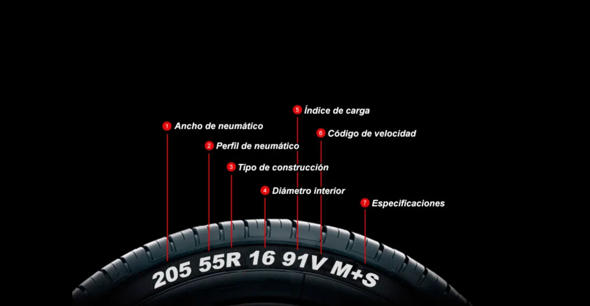

¡Descifra el Código de tu Caucho! Lo Que Debes Saber Antes de Comprar
Publicado el
Cuando compras un caucho, ¿te has fijado en los números y letras inscritos en su lateral? Estos códigos contienen información clave sobre el rendimiento, tamaño y especificaciones del neumático. En Corcauchos, en la Av. Lara desde 2006, queremos ayudarte a interpretar estos datos para que tomes decisiones más informadas al elegir el caucho perfecto para tu vehículo.
Cómo leer un caucho: Guía práctica para conocer sus características

1. Medidas del Caucho
Uno de los aspectos más importantes al leer un caucho es comprender su medida. Por ejemplo, si ves una inscripción como 205/55R16, esto significa:
205: Anchura del neumático en milímetros.
55: Relación de aspecto (altura del perfil en porcentaje respecto a la anchura).
R16: Tipo de construcción (R indica Radial) y diámetro del Rin en pulgadas.
2. Índice de Carga
El índice de carga es un número que indica cuántos kilogramos puede soportar el caucho. Por ejemplo, un índice de 91 significa que puede soportar 615 kg por neumático. Es esencial que el índice de carga coincida con las especificaciones del fabricante de tu vehículo.
3. Índice de Velocidad
Justo después del índice de carga, verás una letra que representa la velocidad máxima que el caucho puede manejar de manera segura. Algunas de las más comunes son:
- S: Hasta 180 km/h
- H: Hasta 210 km/h
- V: Hasta 240 km/h
4. Fecha de fabricación
El código DOT es un sello de calidad que también incluye la fecha de fabricación. Los últimos cuatro dígitos indican la semana y el año en que fue producido. Por ejemplo, un código DOT 3023 indica que el neumático se fabricó en la semana 30 del año 2023.
5. Tipo de uso y Certificaciones
Algunos cauchos tienen sellos específicos según su rendimiento:
- M+S (Mud & Snow): Apto para barro y nieve.
- 3PMSF (Three-Peak Mountain Snowflake): Indica que cumple con estándares de invierno.
- Eco-Friendly: Diseñado para menor consumo de combustible.
CORCAUCHOS: Tu mejor Opción en Cauchos en Barquisimeto
En CORCAUCHOS, sabemos que elegir el caucho adecuado puede marcar la diferencia en seguridad y rendimiento. Si necesitas asesoría para encontrar el mejor caucho para tu vehículo, nuestro equipo en Barquisimeto está listo para ayudarte.
💡 ¡Visítanos y mantén tu vehículo en perfecto estado!

¿Necesitas este servicio en Barquisimeto? Escríbenos y te atendemos.
Escríbenos por WhatsApp